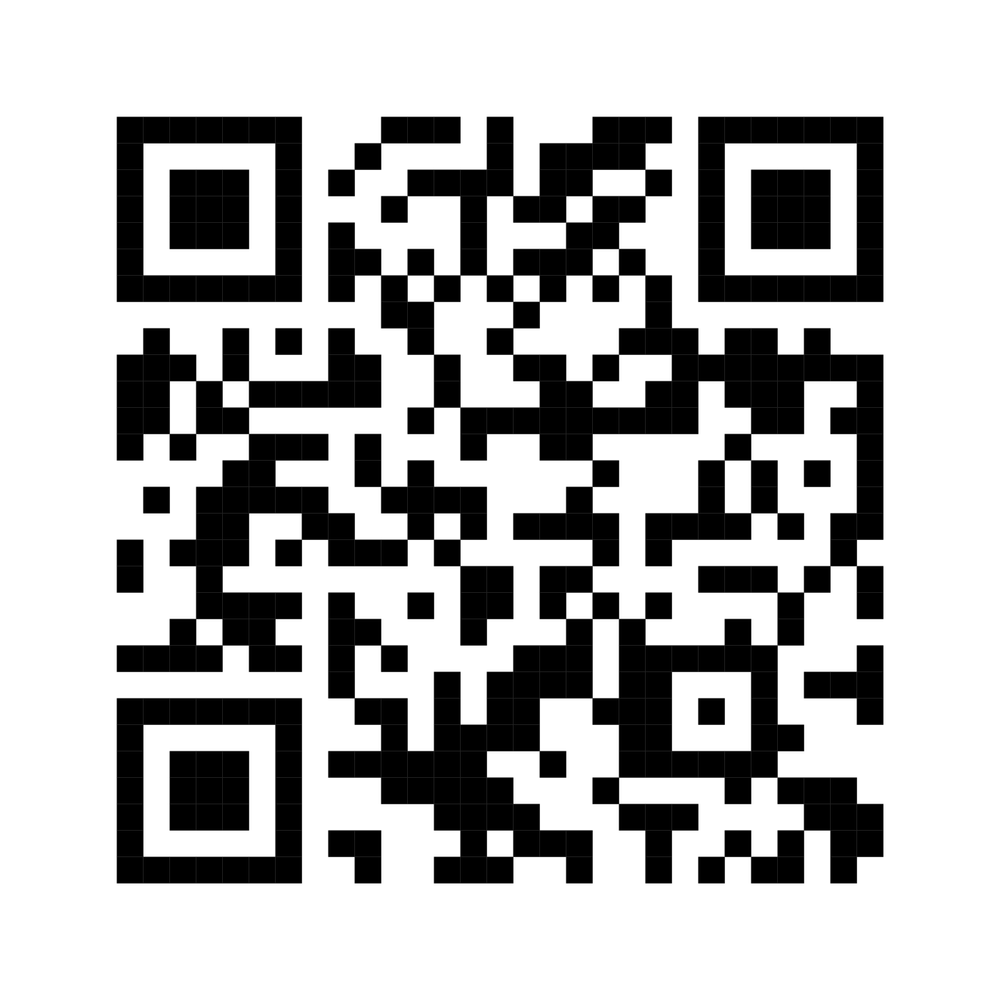

{kind=link}

Neutral, share-ready kit
Student election media kit for hall, SRC, and LNUGS organizers.
Download today’s campaign graphics, copy ready-to-use captions, and share the verified lubanrestaurant-com.png QR only. The kit is built for quick posting on Instagram, Facebook, WhatsApp, and group chats without endorsing any candidate.
Neutral
No candidate endorsement. Food-first and campus-friendly.
Mobile-friendly
Cards, captions, and QR access are set up for small screens.
Easy to share
Use the caption copy buttons or the direct download links.
What is included
Feed graphics, story graphics, a printable flyer, the verified QR image, and caption blocks for general launch, hall, SRC, LNUGS, manifesto night, election day, and results night.
Hall
SRC
LNUGS
WhatsApp
Stories
Flyer
Use the verified QR only
Linking target: https://lubanrestaurant.com. The approved QR image is assets/qr-codes/lubanrestaurant-com.png.
Verified QR
Print or share this QR image as-is. Keep the quiet zone intact and avoid stretching or re-exporting it.
Organizer notes
This media kit is neutral. It is meant for hall pages, SRC pages, LNUGS pages, student group chats, WhatsApp statuses, and campaign-team updates that need quick food content without political endorsement.
Hall teams
Use the hall graphic for long prep nights, group meals, and floor-to-floor sharing.
SRC teams
Use the SRC graphic for debate breaks, planning posts, and volunteer coordination.
LNUGS teams
Use the LNUGS graphic for delegate updates, meetups, and student leadership channels.
Campaign graphics
Each card includes a download button and a one-click caption so organizers can post quickly without editing text from scratch.
Ready-to-copy captions
These are the neutral post captions for the election period. They keep the message focused on meals, campus energy, and the verified Luban link.
Posting guidance
Use the feed graphics for public posts, the story graphics for WhatsApp status and Instagram stories, and the flyer for broadcast messages or printable handoff. Keep the wording neutral and avoid implying support for any candidate, hall, party, or slate.